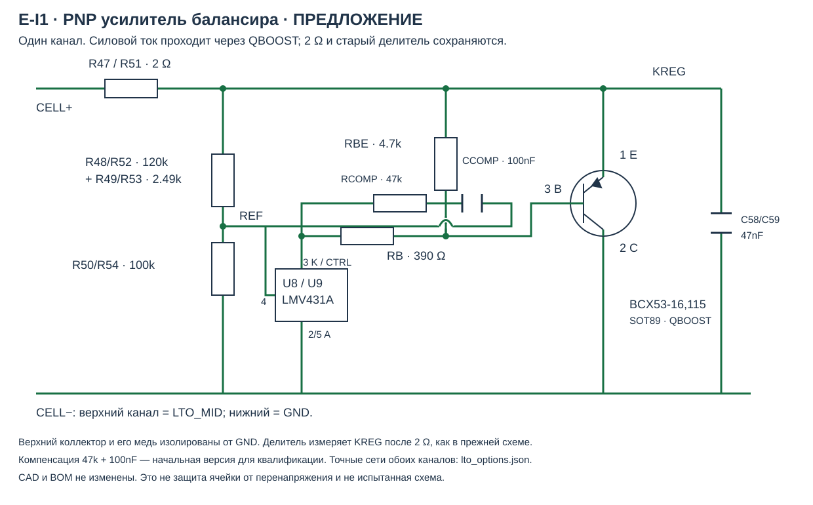

12 октября 2026 · Только предложение для согласования. Схема, плата, model.json и монтажные варианты не изменялись.
Предлагается BCX53-16,115 в каждом канале: эмиттер на KREG после существующих 2 Ω, коллектор на минус своей ячейки. Новый катод CTRL управляет базой через 390 Ω; 4,7 kΩ эмиттер–база выключает транзистор и обеспечивает катодный ток при балансировке. Сохраняются 120 kΩ + 2,49 kΩ / 100 kΩ и C58/C59 = 47 nF. Верхний коллектор — LTO_MID, нижний — GND.

Точные сети обоих каналов, исходные SHA256 и расчёты JSON · Воспроизводимый расчёт
Старый порог: 2.7772 В типично; низкий угол 2.7003 В. При 2,80 В и 1,98 Ω расчёт требует 50.4 мА — больше рекомендуемых 15 мА LMV431. Это демонстрирует перегрузку исходной цепи, а не предсказывает её ток вне спецификации. Добавление PNP меняет напряжение катода, поэтому прежние номиналы не гарантируют прежний порог до милливольта. Потребление отключённого делителя ориентировочно 12.33 мкА на ячейку; утечки PNP/LMV и монтаж добавляют ток.
При напряжениях узлов 0…5,5 В и начальном напряжении CCOMP в пределах ±5,5 В ток катода ограничен резисторами: 5,5 / 381,03 + 11 / 45919 = 14.674 мА. Для резисторов консервативно суммированы 1% и 200 ppm/K × 65 K. Серийная компенсация CTRL → 47 kΩ → 100 nF → REF — начальный кандидат, RC-полюс 33,9 Гц. Этот расчёт ограничивает ток, но не доказывает устойчивость петли.
| Новая позиция | Шт. | Номинал | MPN / корпус | Закупка / статус |
|---|---|---|---|---|
| QBOOST1 / QBOOST2 | 2 | PNP | BCX53-16,115 SOT89 | Карточка LCSC: part listed in stock when checked 2026-10-12; Danomsk stock unconfirmed |
| RB1 / RB2 | 2 | 390 ohm 1% | RC0805FR-07390RL 0805 | Карточка Distributor part link; stock not newly confirmed |
| RBE1 / RBE2 | 2 | 4.7 kohm 1% | RC0805FR-074K7L 0805 | Concrete manufacturer part; Danomsk exact part/stock not confirmed |
| RCOMP1 / RCOMP2 | 2 | 47 kohm 1% | RC0805FR-0747KL 0805 | Concrete manufacturer part; Danomsk exact part/stock not confirmed |
| CCOMP1 / CCOMP2 | 2 | 100 nF X7R | CC0805KKX7R0BB104 0805 | Карточка Exact Danomsk part already selected in project; stock not rechecked today |
BCX53: выводы 1 E, 2 C, 3 B. Нельзя использовать посадку с другой распиновкой SOT89. Для тепла нужен коллекторный полигон около 1 см² на канал; у верхнего канала он электрически изолирован от общей земли. Не размещать нагревающийся транзистор вплотную к делителю REF и термистору.
| Ячейка, В | Ток по низкому порогу, мА | PNP, Вт (верхняя оценка) | 2 Ω, Вт | Tj при Ta=85 °C / θ=132 K/W |
|---|---|---|---|---|
| 2.80 | 50.4 | 0.136 | 0.005 | 103 |
| 2.85 | 75.6 | 0.204 | 0.011 | 112 |
| 3.00 | 151.4 | 0.409 | 0.045 | 139 |
| 3.30 | 302.9 | 0.818 | 0.182 | 193 |
θ = 132 K/W взята для медной площади 1 см² из документа Nexperia; реальная плата под крышкой может охлаждаться хуже. Режим 3,30 В перегревает и PNP, и прежний 0805 2 Ω. Переработка устраняет перенос основного тока через LMV, но не превращает балансир в защиту ячейки. Верхний расчёт порога около 2.928 В включает предположение IREF = 0,9 мкА; это сумма отдельных максимумов, а не отдельная гарантированная паспортная граница на всех температурах.
Кроме тепла, проверить запас: CTRL ≥ VREF и Ic/hFE + VBE/RBE ≤ (KREG − VBE − VREF)/RB. Таблица BCX53-16 не гарантирует единую минимальную hFE во всём диапазоне токов и температур. Поэтому режимы 2,75 / 2,80 / 2,85 В, холодный пуск, ток катода, реальные пороги и отсутствие генерации требуют образца. Минимальный ток LMV и начальная компенсация также проверяются при малом токе балансировки.
CN3722 имеет VFB = 2,416 В типично / 2,440 В максимум и IFB = 50 / 300 нА; OVP = 1,08 / 1,10 от заданного заряда. Существующий делитель 121 kΩ / 100 kΩ, 0,1%, ±25 ppm/K даёт:
| Режим | Типично | Верхняя статическая оценка, включая 65 K |
|---|---|---|
| CV с батареей | 5.3454 В | 5.4443 В |
| OVP при отсутствии батареи | 5.7730 В | 5.9888 В |
Формула CV: VFB × (1 + R3/R4) + IFB × R3; для температурной оценки каждого резистора суммированы 0,1% и 65 × 25 ppm/K. Рабочий максимум VIN TPS63802 — 5,5 В; абсолютный 6 В не разрешает этот обычный режим. CN3722 не задаёт максимальную задержку OVP; после прекращения управления дроссель всё ещё отдаёт энергию в конденсаторы.
Снижение R3 до 100 kΩ дало бы CV 4.837 В и статическую OVP 5.415 В, но изменило бы утверждённую зарядку и нормальную работу балансиров. Оно не считается исправлением. Иллюстрация чувствительности: при предполагаемых L = 100 мкГн, пиковом токе 0,8 А и Ceff = 20 мкФ энергия даёт √(5,415² + L×I²/C) = 5.703 В. Это не модель фактического выброса, а причина не приравнивать статический делитель к ограничению любого перехода.
| Выбор | Результат | Что требуется |
|---|---|---|
| Сохранить утверждённый LTO | Заряд 5,345 В, прежний прямой BAT → VIN | E-I2 остаётся открытым; работа от солнца без батареи и её отключение под током не квалифицированы. |
| Разрешить независимую отсечку VIN | Сохранить заряд, разорвать питание TPS при повышении BAT малопотерьным ключом | Пересмотр прежнего запрета на OVP; отдельное согласование схемы, пускового состояния, допусков, скорости отсечки и остаточной энергии. Готовая квалифицированная отсечка сейчас не заявлена. |
Отклонённое сравнение: TPS7A2650DRVR (фиксированные 5 В, WSON6) имеет 500 мА, IQ без нагрузки 2 мкА типично / 4,5 мкА максимум и статическую точность ±1%. Но падение достигает 590 мВ при 500 мА; он ограничивает входной ток TPS и не гарантирует любой выброс при выходе из dropout. Это расходится с требованием экономить напряжение и не рекомендуется как готовая замена OVP. Проверенный MPN доступен в карточке LCSC; точное наличие изменяется.
Общее «исправить недочёты» не отменяет прежние явные решения о 2 Ω, сохранении номиналов S4.16 и отказе от отдельной защиты. Усилитель сохраняет 2 Ω, но добавляет элементы и требует квалификации; новая отсечка меняет утверждённую цепь. Поэтому эти два пункта отделены от пяти новых исправлений V2 и вынесены на явный выбор. Оба пока не отмечены как исправленные в CAD.
Для усилителя обязательны осциллограммы KREG/CTRL/REF и тока, смена импеданса источника и пуск, температуры и допуски C58/C59/CCOMP, утечки и нагрев под крышкой. Для будущей отсечки: старт, скачок источника, отключение батареи при максимальном токе, режимы нагрузки и подтверждение VIN ≤5,5 В в согласованном диапазоне. Нужен паспорт фактически купленной LTO ячейки; отдельный балансир не гарантирует её предельное напряжение.
Источник связности — native XML электрического аудита; JSON модели даёт MPN и закупочные ссылки. Наличие новых пассивов в ДАН не подтверждено. Этот отчёт не заменяет утверждённую схему.